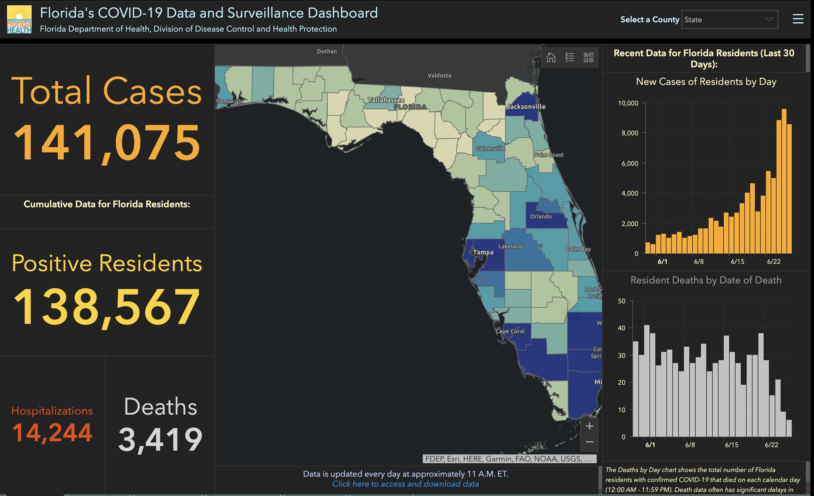
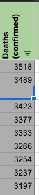
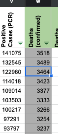
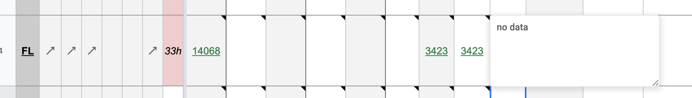

[FL] PCL Historicals and WS2
Death values are historically recorded in both the “Deaths” and “Deaths (Confirmed)” columns for FL. However, FL’s death values are unclear about what they represent, so they should only be recorded in the main “Deaths” field.
Comments
On 6/27, Restored confirmed deaths since the data dictionary reflects that FL deaths are confirmed.
Tooltips and process notes in WS2 were updated.
REFERENCE: Screenshot of current dashboard here. Full text of fine print in bottom right says this: “The Deaths by Day chart shows the total number of Florida residents with confirmed COVID-19 that died on each calendar day (12:00 AM - 11:59 PM). Death data often has significant delays in reporting, so data within the past two weeks will be updated frequently.”
Updated “State Website Deaths” and “Reasoning” in PCL to correspond to note added in “Misc Notes.”
Restoring deaths (confirmed) value for 6/26 and closing the issue  
Added tooltip as well as process note.
